Dungeon Teacher · 0.6.13A árvore viva e as profissões
Iteração 37 · Revisão Visual 2. Recursos implementados, animações e capturas do Electron. A aprovação artística final permanece com o usuário.
Pesca e mineração · recursos finais
Seis classes, dois corpos e quatro vistas. Cada célula tem 128 × 128 pixels; o corpo conserva a escala nativa da revisão anterior. As ferramentas e poses estão prontas nos quadros. A sequência abaixo é uma demonstração de poses; no jogo, a autoridade determina espera, resultado e cancelamento.
Renderização real do personagem
Capturas do renderizador de produção no Electron. As matrizes mostram as quatro direções, mochila e identidade de cada classe. Os ciclos com efeitos usam a mesma linha e o mesmo ponto de origem usados no jogo.
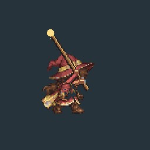
Pesca · Mago feminino, cores alteradas e linha vinculada à vara.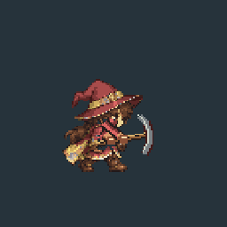
Mineração · golpe e recuperação do mesmo personagem.Uma jornada que conserva suas raízes
A pequena árvore do Novato cresce em cinco identidades. Os medalhões e conexões usam os dados reais: dez habilidades do Novato e dezesseis de cada classe. A ilustração contém o tronco comum; os requisitos continuam sendo regras do jogo.
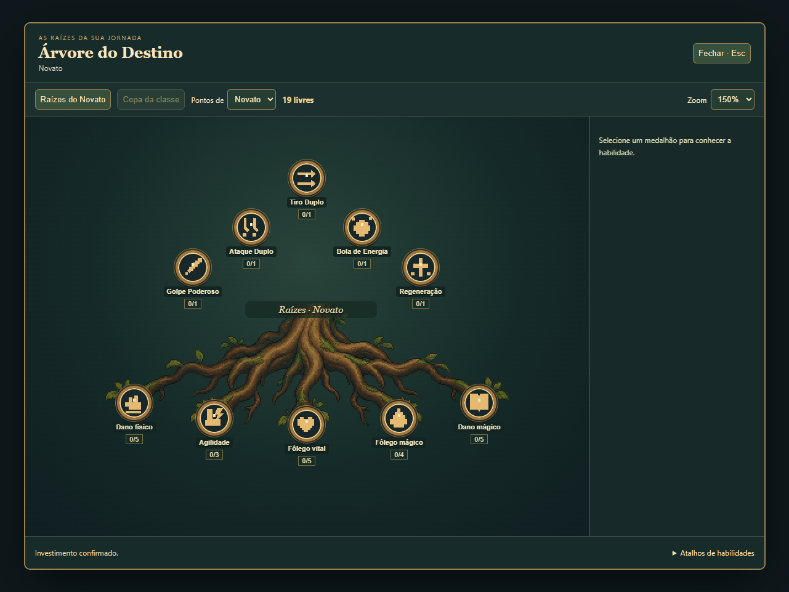
Promoção e expansão da interface no Electron; exemplo técnico com personagem isolado.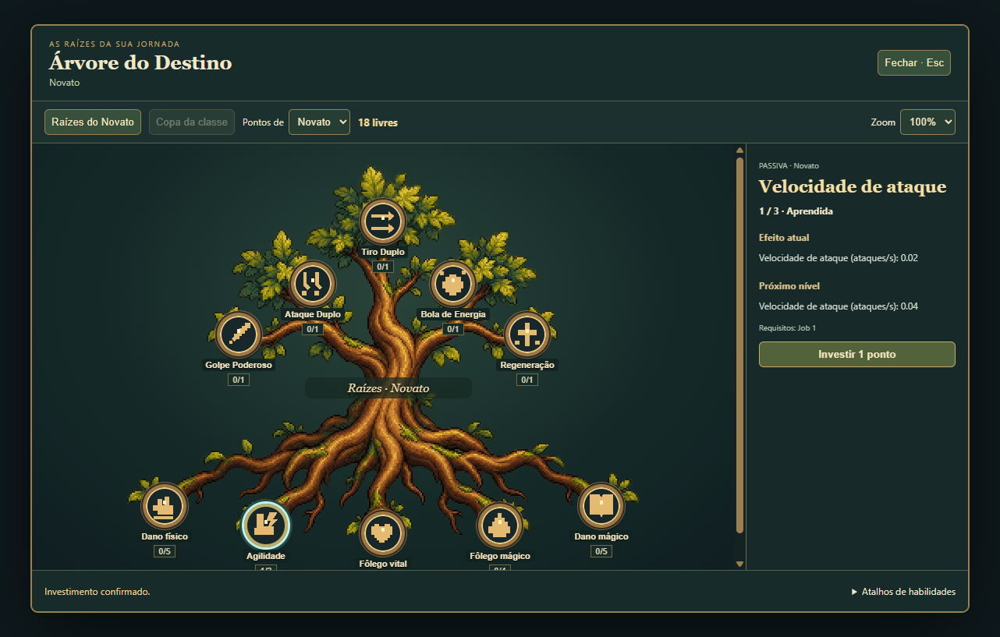
Passiva aprendida, efeito atual, próximo rank e investimento confirmado.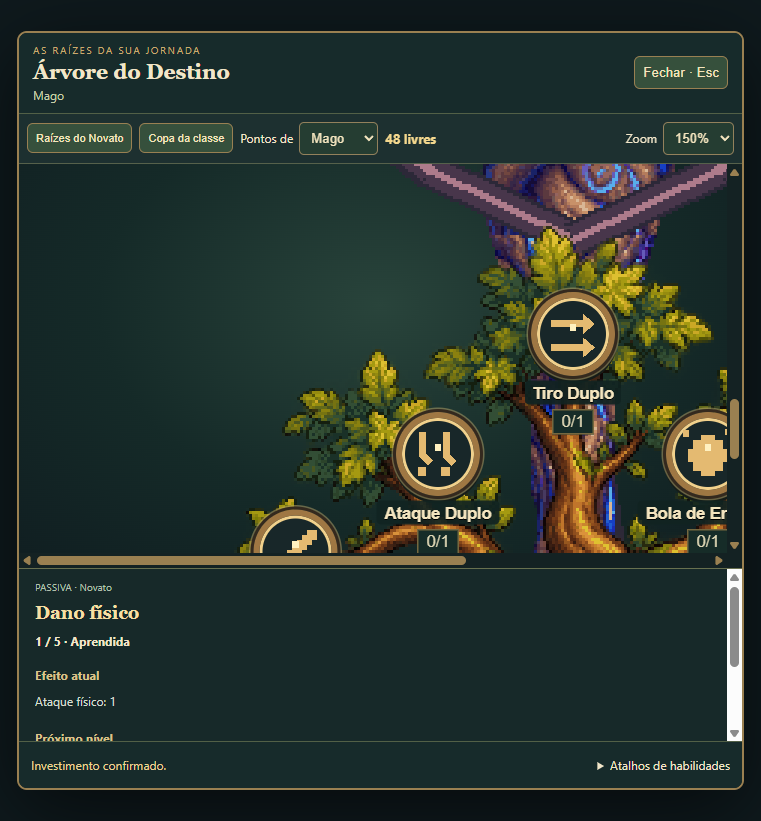
Navegação, zoom e detalhes em janela menor.ADM e Alunos · capturas do jogo
Perfis temporários, TLS e banco isolado. Evidências de observação remota, investimento e persistência; nenhuma alteração em banco oficial.
Comparação com 0.6.12
Os antigos atlas genéricos abaixo eram usados nas profissões da versão-base. As novas sequências acima mantêm a classe, o corpo e as cores atuais. A captura da árvore antiga, quando presente na sessão comparativa, está na seção do jogo.
fishing-v043.png · recurso anterior

fishing-reel-v064.png · recurso anterior

mining-v043.png · recurso anterior

Fontes de arte · não são capturas do jogo
As árvores partiram de arte gerada e receberam redução à paleta, posicionamento e união manual de troncos e galhos. Os estudos de gesto das profissões foram referências; os quadros finais foram preparados a partir dos sprites nativos da RV1, com acabamento manual autorizado.
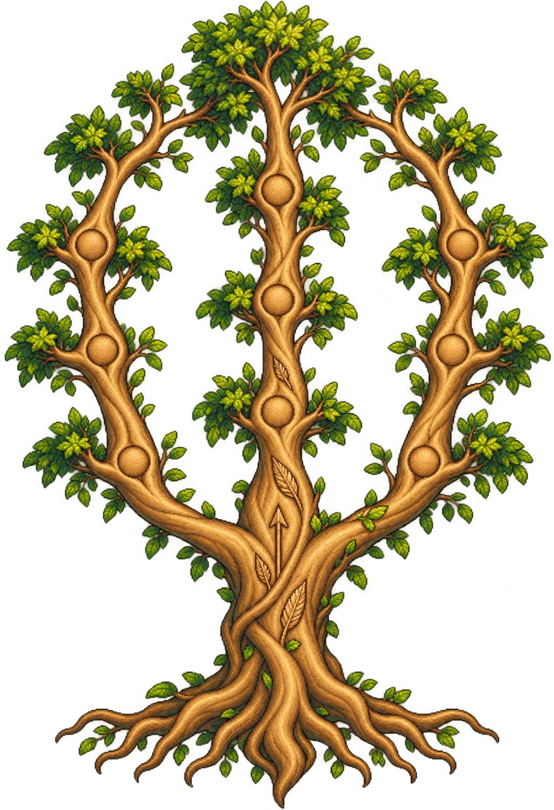
Fonte de arte · archer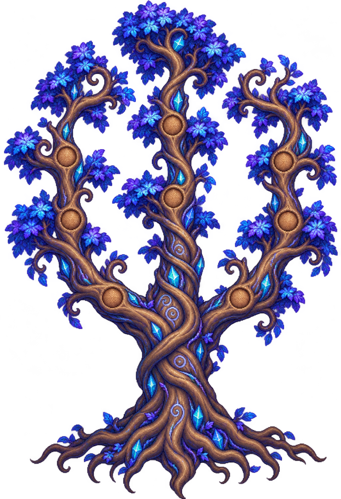
Fonte de arte · mage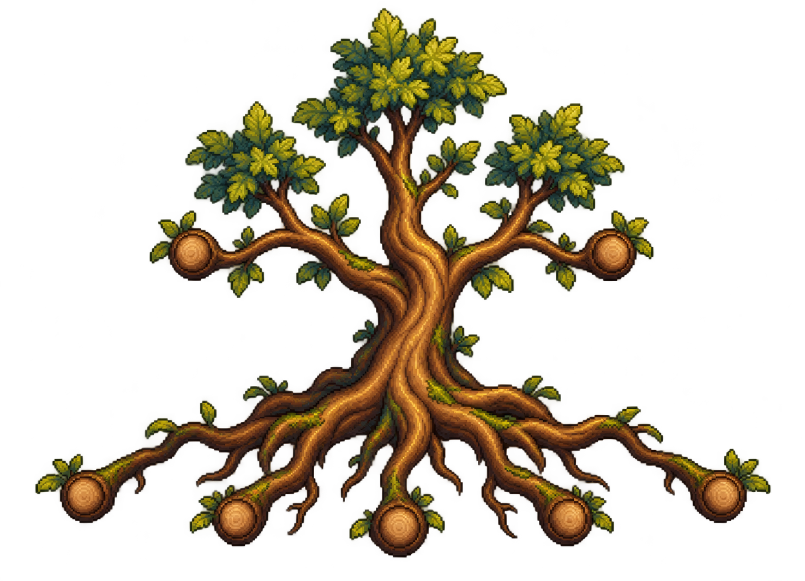
Fonte de arte · novice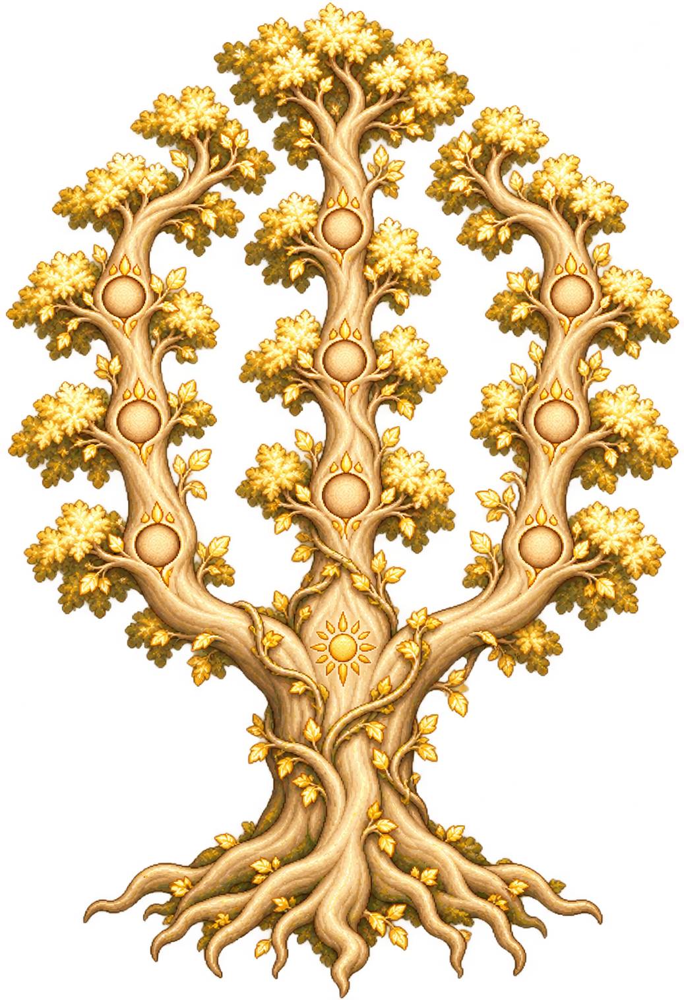
Fonte de arte · priest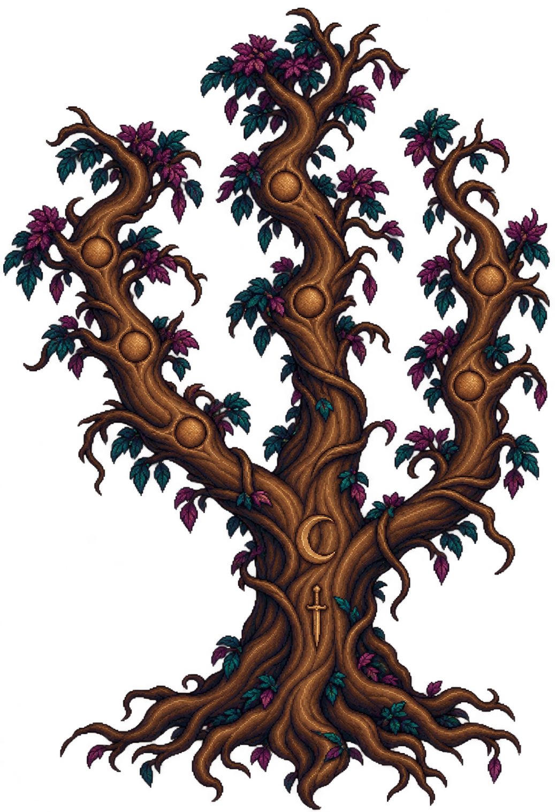
Fonte de arte · rogue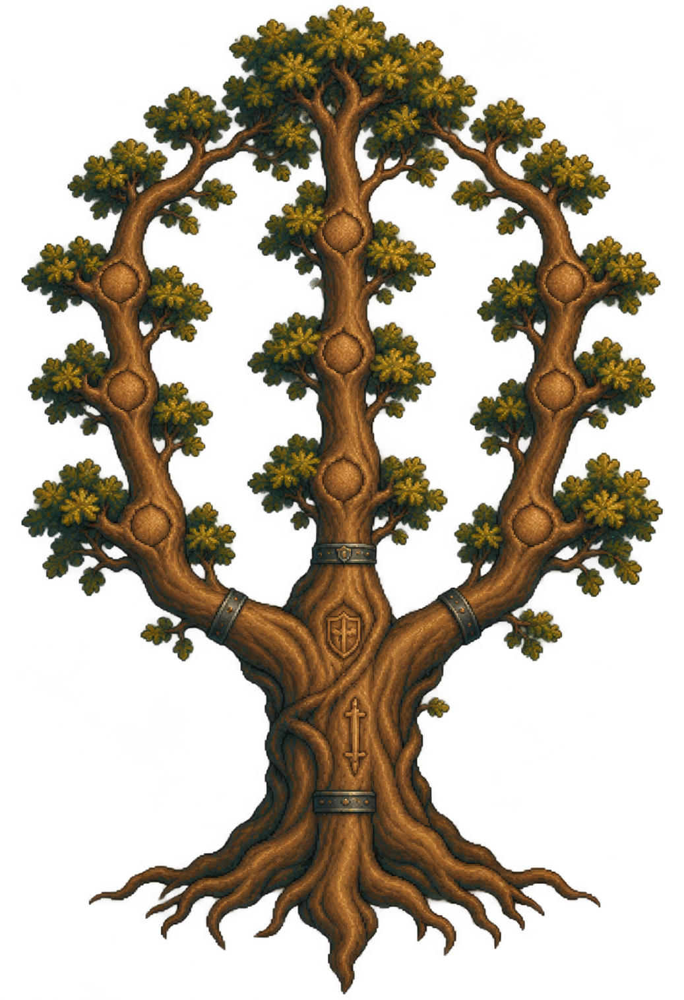
Fonte de arte · warrior